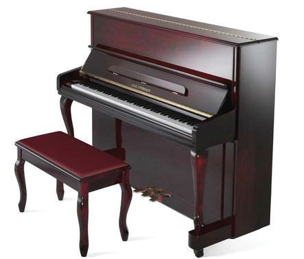
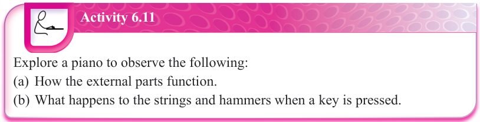
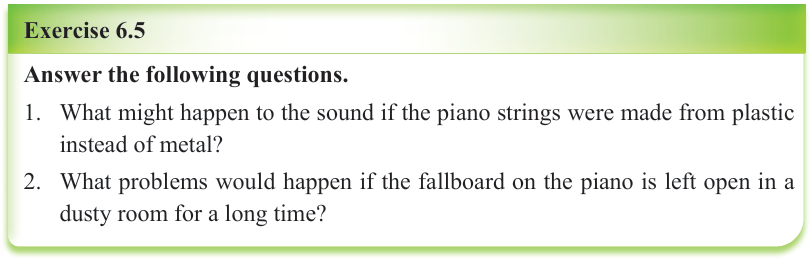

Piano lid
Music rack
Fallboard
Keyboard
Piano stool
Pedals
Figure 6.4: Parts of the piano

Activity 6.11
Explore a piano to observe the following:
(a) How the external parts function.
(b) What happens to the strings and hammers when a key is pressed.

Exercise 6.5
Answer the following questions.
1. What might happen to the sound if the piano strings were made from plastic instead of metal?
2. What problems would happen if the fallboard on the piano is left open in a dusty room for a long time?
Names of the keys on the piano keyboard
The piano keys are named using the first seven letters of the alphabets which are A, B, C, D, E, F and G.
A complete piano keyboard has 88 keys.
These are categorised into 52 white keys and 36 black keys.
Black keys are also called enharmonic keys because every black key has two names derived from two white keys on its left and right sides.
Thus, a black key can either be flat or sharp.
For example, a black key named as “A” sharp (A♯) is also a B flat (B♭).
Figure 6.5 shows a complete piano keyboard with 88 keys.